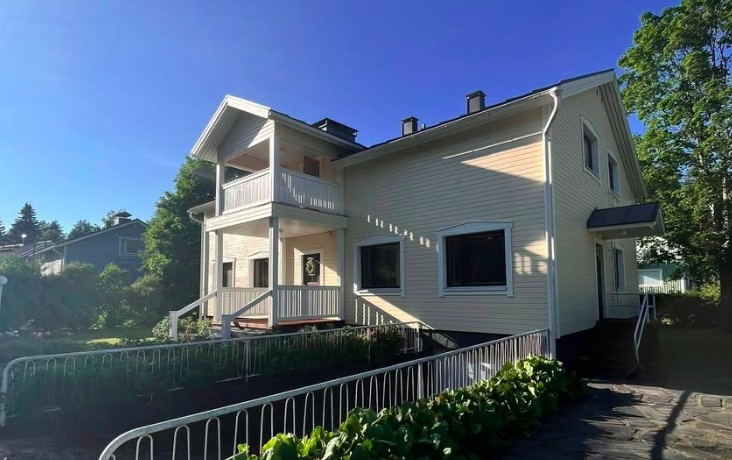
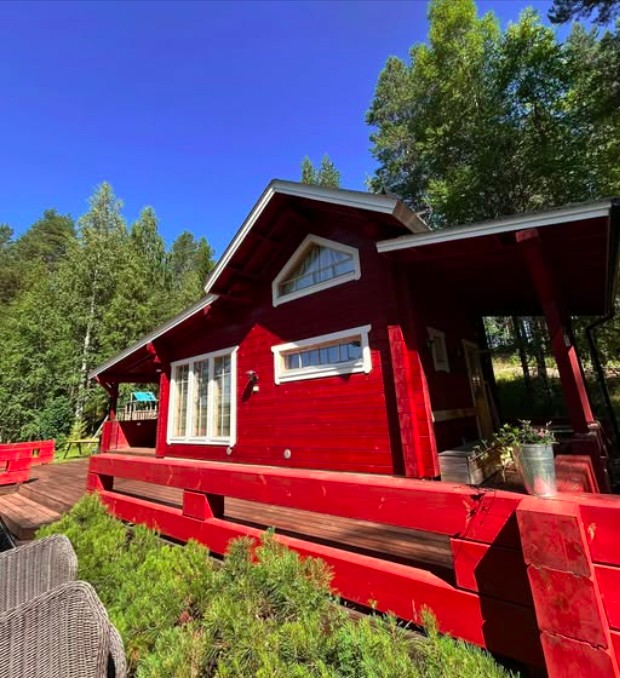
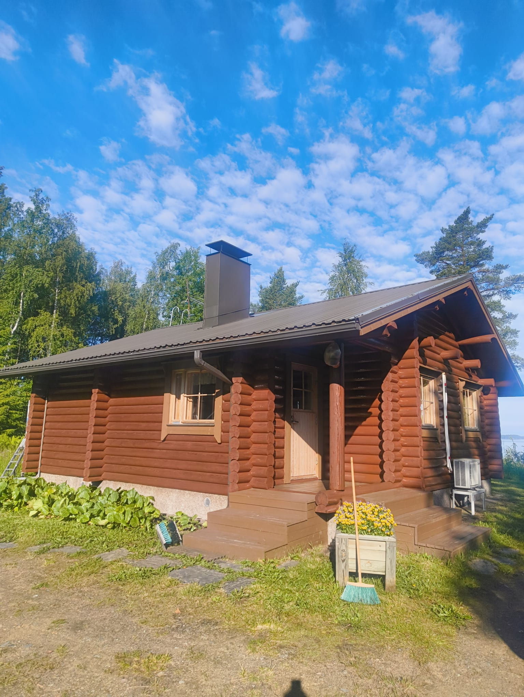
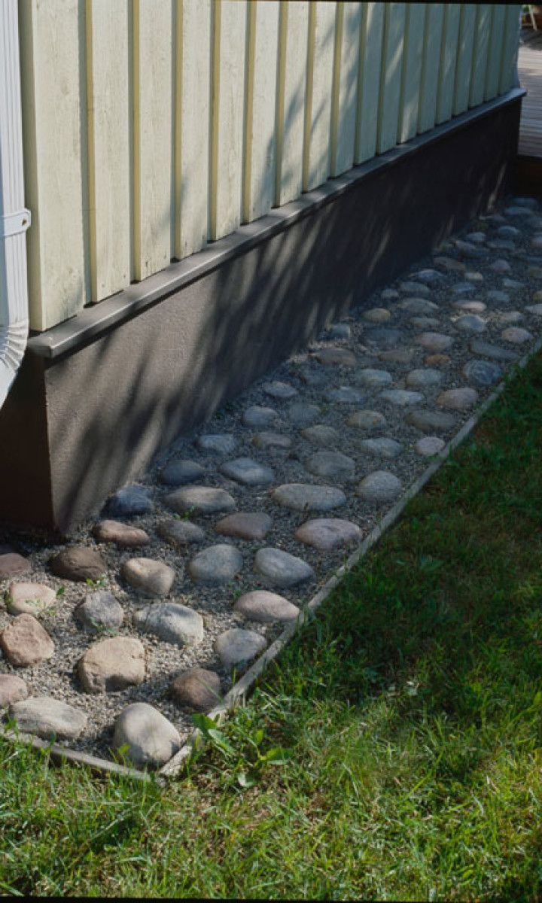
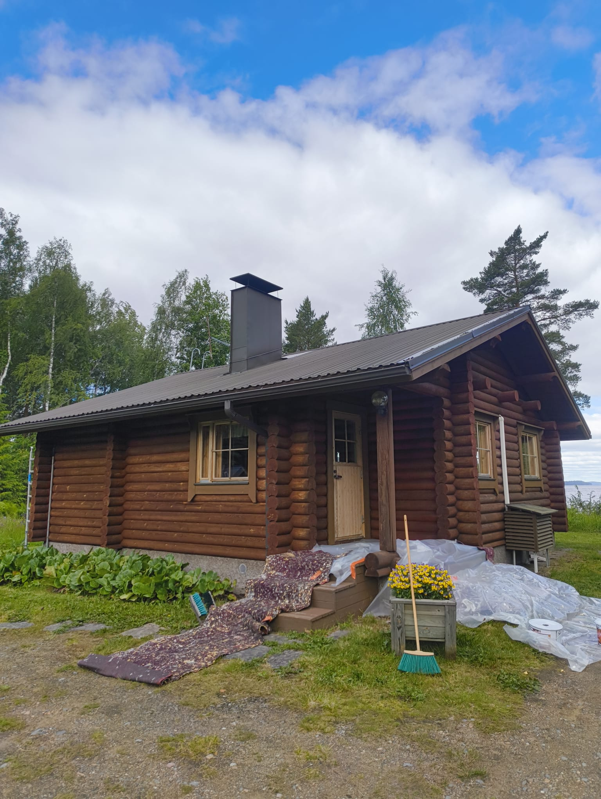
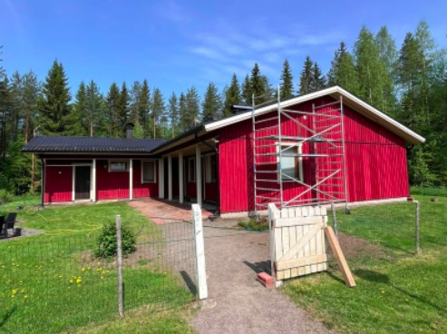
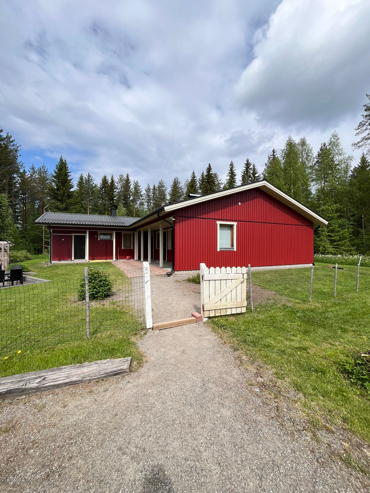

Fasadmålning i Joensuu
PintaPojat utför fasadmålning, underhållsmålning och små ytrenoveringar i Joensuu och närområdet.
Allmänt
PintaPojat, som består av två enskilda näringsidkare, erbjuder fasadmålning, underhållsmålning och små ytrenoveringar i Joensuu med omnejd. Vi fokuserar på ett snyggt, hållbart och välutfört resultat. Ett hus får inte bara ett nytt utseende av målning, utan också bättre skydd mot väder, fukt och slitage. Rätt förarbete och noggrant utförande syns både i slutresultatet och i hur länge det håller.

Om oss
PintaPojat är ett företag som består av två unga entreprenörer från Joensuu, Vilho Räisänen och Ilmari Sippola.
Målning
Vi utför fasadmålning på egnahemshus, stugor och andra byggnader i Joensuu och närområdet. Arbetet kan omfatta tvätt, rengöring av den gamla färgytan, nödvändigt förarbete och slutmålning.



Mer information om tjänsten
Klicka på knappen för en tjänst så öppnas mer information här.
Förarbete
Ett bra resultat börjar med förarbete. Tvätt, skrapning, skydd och andra förberedelser påverkar direkt hur målningen ser ut och hur länge den håller. Projektet börjar ofta med mögeltvätt, där huset tvättas noggrant med mögeltvättsmedel och borstar. På så sätt avlägsnas svarta mögelfläckar, damm och annan smuts. Förarbetet omfattar också borttagning av flagande färg, grundmålning av blottade träytor och skydd av omgivningen mot färgstänk.

Små ytrenoveringar
Alla objekt behöver inte bara färg. Ibland behövs också allmän uppsnyggning, mindre reparationer och underhållsarbeten. Till exempel vindskivor och foder runt fönster blir ofta slitna och kan behöva bytas ut. Små underhållsarbeten i rätt tid hjälper till att hålla hela byggnaden i bättre skick och förebygger större reparationskostnader i framtiden.


Vanliga frågor om utomhusmålning
Hur ofta bör ett hus målas?
Vanligtvis ungefär vart 10–15:e år, men underhållsintervallet beror på ytan, färgen, vädret och hur väl tidigare behandlingar har utförts.
Behövs tvätt före målning?
Ja. Ytan måste rengöras före målning så att den nya behandlingen fäster ordentligt och resultatet håller.
Kan man måla direkt på en gammal yta?
Ibland går det, men ofta är färgytan delvis i dåligt skick och då behövs förarbete. Därför lönar det sig att bedöma objektet innan arbetet påbörjas.
Hur länge brukar målningen ta?
Tiden beror på objektets storlek, vädret och mängden förarbete, men ett vanligt egnahemshus blir ofta klart på cirka 3–5 dagar.
Kan man måla när det regnar eller är fuktigt ute?
Vanligtvis inte. För mycket fukt försämrar resultatet, så rätt väderfönster är en viktig del av en lyckad målning.
Vad kostar målningen?
Priset beror på objektets storlek, skick och mängden förarbete. Att måla ett vanligt egnahemshus kostar vanligtvis cirka 3 000–5 000 €.
Kan målning höja husets värde?
En snygg fasad förbättrar byggnadens helhetsintryck och kan öka intresset vid försäljning.
Boka ett bedömningsbesök
Be om ett gratis bedömningsbesök, så bedömer vi objektet och arbetets lämpliga omfattning. Ju mer detaljerad information du ger, desto lättare är det för oss att återkomma snabbt.
Feedback
Din feedback hjälper oss att utveckla vår verksamhet och kundservice.